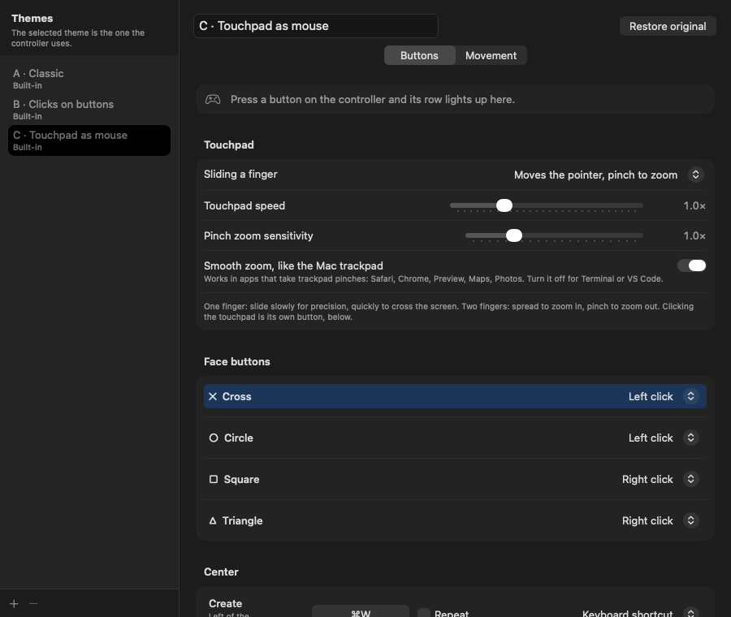

Your PS5 controller,
now your Mac's mouse.Tu control de PS5,
ahora el mouse de tu Mac.
Point, click, scroll, zoom, dictate and switch windows from a controller in your lap. Your wrists and shoulders will thank you. Apunta, haz clic, scroll, zoom, dicta y cambia de ventana con un control en tu regazo. Tus muñecas y hombros te lo van a agradecer.

Everything a mouse does, and moreTodo lo que hace un mouse, y más
Built for long days of the same moves: dictate a prompt, scroll, click, go back, close, switch.Hecho para días largos de los mismos movimientos: dictar un prompt, scroll, clic, regresar, cerrar, cambiar.
Sticks as mouseSticks como mouse
The left stick moves the pointer with acceleration, the right one scrolls. Hold precision mode for small targets.El stick izquierdo mueve el puntero con aceleración y el derecho hace scroll. Mantén el modo precisión para objetivos pequeños.
Any button, any actionCualquier botón, cualquier acción
Clicks that drag and double-click, shortcuts that repeat, push-to-talk dictation, Mission Control.Clics que arrastran y hacen doble clic, atajos que se repiten, dictado push-to-talk, Mission Control.
Touchpad as trackpadTouchpad como trackpad
One finger moves the pointer. Two fingers pinch to zoom smoothly, like a Mac trackpad.Un dedo mueve el puntero. Con dos dedos pellizcas para un zoom suave, como en el trackpad de la Mac.
ThemesTemas
Three built-in mappings plus your own, switched from the menu bar or the controller.Tres mapeos predeterminados más los tuyos, y los cambias desde la barra de menú o el control.
Visual settingsConfiguración visual
Press a button and its row lights up. Record shortcuts by pressing them.Presiona un botón y su fila se ilumina. Graba atajos presionándolos.
Real battery levelBatería real
Read straight from the controller, since macOS doesn't report it over Bluetooth.Se lee directo del control, porque macOS no la reporta por Bluetooth.
Install in a minuteInstálalo en un minuto
You need macOS 13 or later and Xcode or its Command Line Tools.Necesitas macOS 13 o posterior y Xcode o sus Command Line Tools.
Build and installCompila e instala
The script builds, signs, copies the app to ~/Applications and opens it.El script compila, firma, copia la app a ~/Applications y la abre.
git clone https://github.com/jofer95/gamepad-mouse.git
cd gamepad-mouse
./scripts/build-app.sh --installAllow AccessibilityPermite Accesibilidad
Turn on GamepadMouse in System Settings → Privacy & Security → Accessibility, so it can move the pointer and type.Activa GamepadMouse en Ajustes del Sistema → Privacidad y seguridad → Accesibilidad, para que pueda mover el puntero y teclear.
Connect the controllerConecta el control
Hold PS + Create until the light blinks and pair it in System Settings → Bluetooth, or plug in a USB-C cable. The light bar turns blue when it's ready.Mantén PS + Create hasta que la luz parpadee y emparéjalo en Ajustes del Sistema → Bluetooth, o conecta un cable USB-C. La barra de luz se pone azul cuando está listo.
Three themes to startTres temas para empezar
A theme is a full button mapping. Copy one and make it yours in Configure Buttons…Un tema es un mapeo completo de los botones. Copia uno y hazlo tuyo en Configurar botones…
| ControlControl | A · ClassicA · Clásico | B · Clicks on buttonsB · Clics en botones | C · Touchpad as mouseC · Touchpad como mouse |
|---|---|---|---|
| ✕ / ○ | Dictate / Close windowDictar / Cerrar ventana | Left clickClic izquierdo | Left clickClic izquierdo |
| □ / △ | Precision / ReturnPrecisión / Enter | Right clickClic derecho | Right clickClic derecho |
| Touchpad clickClic del touchpad | Left clickClic izquierdo | DictateDictar | DictateDictar |
| Touchpad slideDeslizar en el touchpad | — | — | Pointer, pinch to zoomPuntero, pellizcar para zoom |
| Create / Options | Escape / Last appEscape / App anterior | Close window / ReturnCerrar ventana / Enter | Close window / ReturnCerrar ventana / Enter |
| L1 / R1 | Back / ForwardAtrás / Adelante | ||
| L2 / R2 | Right / Left clickClic derecho / izquierdo | — | — |
| D-pad ↑ / ↓ | ArrowsFlechas | Mission Control / App windowsMission Control / Ventanas de la app | Mission Control / App windowsMission Control / Ventanas de la app |
| PS | Pause / resumePausar / reanudar | ||
⇧⌃. Set your dictation app's push-to-talk (Wispr Flow, Superwhisper…) to it, or record your own.
Dictar mantiene ⇧⌃. Configúralo como push-to-talk en tu app de dictado (Wispr Flow, Superwhisper…) o graba el tuyo.
A tiny trackpad in your handsUn trackpad chiquito en tus manos
Theme C turns the DualSense touchpad into a trackpad.El tema C convierte el touchpad del DualSense en un trackpad.
One finger: pointerUn dedo: puntero
Slide slowly for precision, quickly to cross the screen. Putting a finger down never moves the pointer.Desliza lento para precisión y rápido para cruzar la pantalla. Apoyar el dedo nunca mueve el puntero.
Two fingers: zoomDos dedos: zoom
Spread to zoom in, pinch to zoom out. Smooth in Safari, Chrome, Preview and Maps; switch to ⌘= / ⌘- steps for Terminal and VS Code.Separa para acercar y junta para alejar. Suave en Safari, Chrome, Vista Previa y Mapas; cambia a pasos con ⌘= / ⌘- para la Terminal y VS Code.
How it worksCómo funciona
Plain Swift, no dependencies. Four macOS pieces do the work.Swift puro, sin dependencias. Cuatro piezas de macOS hacen el trabajo.
GameController
Reads sticks and buttons, even while the app is in the background.Lee sticks y botones, aunque la app esté en segundo plano.
CGEvent
A 120 Hz loop posts mouse, scroll, keyboard and pinch events.Un ciclo a 120 Hz publica eventos de mouse, scroll, teclado y pellizco.
IOKit HID
Reads battery and both touchpad fingers from the DualSense's own reports.Lee la batería y los dos dedos del touchpad de los reportes del DualSense.
SwiftUI
The settings window, with live button highlighting and shortcut recording.La ventana de configuración, con botones que se iluminan y grabación de atajos.
TroubleshootingSolución de problemas
macOS says the app "contains malware"macOS dice que la app "contiene malware"
It was signed with a revoked certificate. The build script skips those, so rebuild with ./scripts/build-app.sh --install, or pick one with SIGN_IDENTITY=<SHA-1>.Se firmó con un certificado revocado. El script los descarta, así que vuelve a compilar con ./scripts/build-app.sh --install, o elige uno con SIGN_IDENTITY=<SHA-1>.
The controller is connected but nothing movesEl control está conectado pero no se mueve nada
Check that the menu says Accessibility: allowed, and that mapping isn't paused (orange light bar). Press PS to resume.Revisa que el menú diga Accesibilidad: permitida y que el mapeo no esté en pausa (barra de luz naranja). Presiona PS para reanudar.
Accessibility is asked again after every buildPide Accesibilidad otra vez en cada compilación
No signing certificate was found, so the build was signed ad-hoc. Sign in to Xcode with an Apple ID (a free one works) or create a self-signed code signing certificate.No se encontró un certificado y se firmó ad-hoc. Inicia sesión en Xcode con un Apple ID (sirve uno gratuito) o crea un certificado de firma autofirmado.
Smooth zoom does nothingEl zoom suave no hace nada
Only apps that take trackpad pinches respond, and it uses undocumented gesture fields. Turn off Smooth zoom to use ⌘= / ⌘- steps.Solo responden las apps que aceptan el pellizco del trackpad, y usa campos de gestos no documentados. Desactiva el zoom suave para usar pasos con ⌘= / ⌘-.
Can I use the controller's microphone?¿Puedo usar el micrófono del control?
Yes, over a USB-C cable only. Pick "DualSense Wireless Controller" as the input in your dictation app.Sí, pero solo con cable USB-C. Elige "DualSense Wireless Controller" como entrada en tu app de dictado.